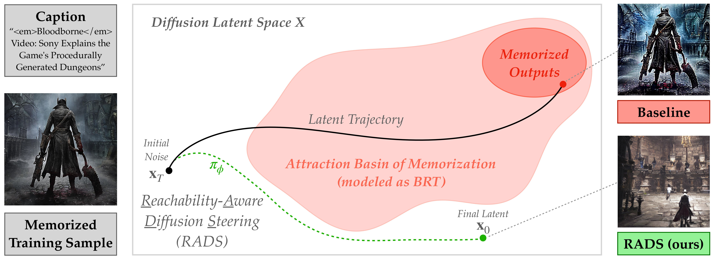

Text-to-image diffusion models often memorize training data, revealing a fundamental failure to generalize beyond the training set. Current mitigation strategies typically sacrifice image quality or prompt alignment to reduce memorization. To address this, we propose Reachability-Aware Diffusion Steering (RADS), an inference-time framework that prevents memorization while preserving generation fidelity. RADS models the diffusion denoising process as a dynamical system and applies concepts from reachability analysis to approximate the "backward reachable tube" - the set of intermediate states that inevitably evolve into memorized samples. We then formulate mitigation as a constrained reinforcement learning (RL) problem, where a policy learns to steer the trajectory away from memorization via minimal perturbations in the caption embedding space. Empirical evaluations show that RADS achieves a superior Pareto frontier between generation diversity (SSCD), quality (FID), and alignment (CLIP) compared to state-of-the-art baselines. Crucially, RADS provides robust mitigation without modifying the diffusion backbone, offering a plug-and-play solution for safe generation.

Treating the diffusion denoising process as a dynamical system, RADS leverages reachability analysis from control theory to provide key capabilities for mitigating memorization in text-to-image generation: